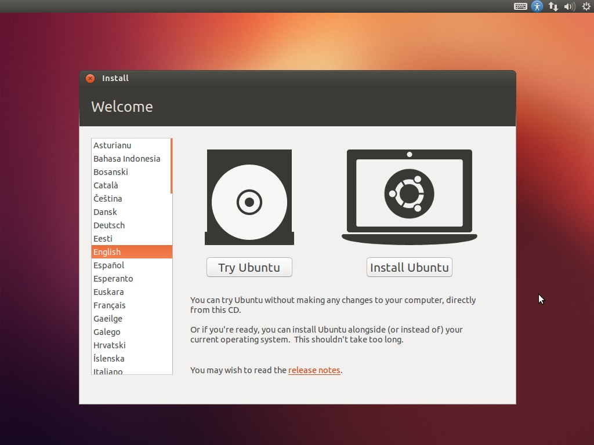
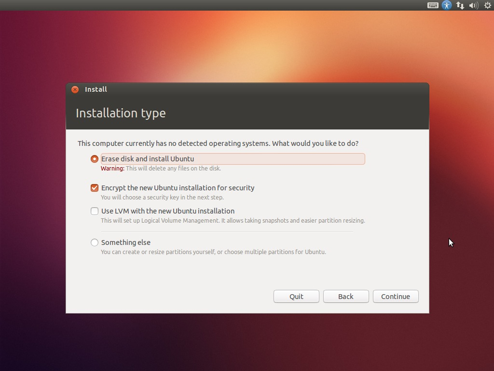
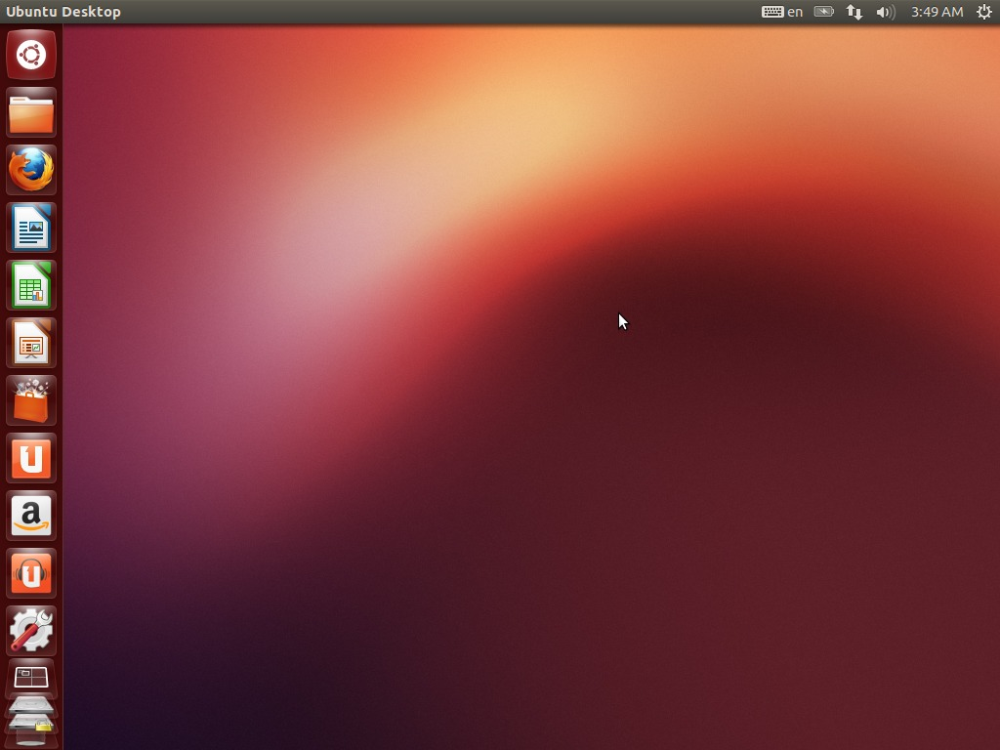
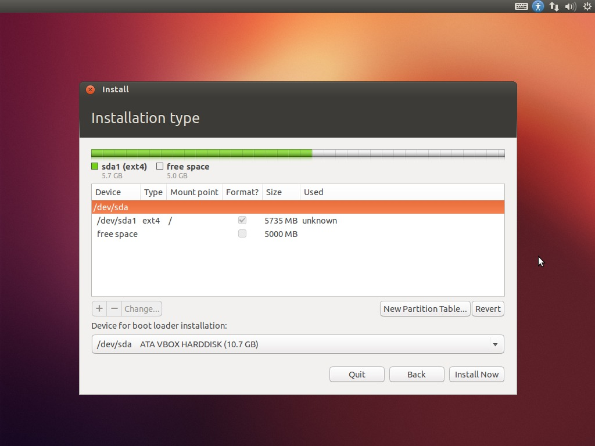

Installing Ubuntu is a breeze, made easy by its convenient graphical installer that rivals the ease-of-use of either Microsoft or Apple's operating systems.
First, you'll need to download and burn the ISO file. Go to ubuntu.com and click Download. Choose "Ubuntu Desktop." Choose the "For the latest features" option, then pick the correct architecture in the "Choose your flavour" box. Then click the Get button. You may be presented with a screen to solicit donations: make one if you'd like, OR scroll to the bottom and choose "No thanks." The file will download automatically.
Once the download is complete, you'll need to load a blank disc into your computer. The next steps depend on the operating system you are using.
Windows 7:
Windows XP (or older):
Mac OS X:
Once you've burned Ubuntu to disc, you will need to prepare your computer for your Ubuntu install. This will depend on your desired setup:
No matter what you have chosen above, you will need to erase your entire hard drive (unless your hard drive presently has enough unpartitioned free space on it, which is doubtful). Before you do this, make sure to back up all of your files to external USB drives or disks. Keep them safe until you can offload your data onto your computer again.
Load your Ubuntu install disc into your computer and reboot. The computer should boot from disc automatically. If it doesn't, visit your computer manufacturer's website and look through the support section for how to boot from disc.
On boot, Ubuntu will load an interface from CD, then present you with this lovely screen:
 If you'd like to try the interface out a bit before you begin, feel free to click "Try Ubuntu." You will be able to go to the installer via a link on the desktop. When you are ready to install, click "Install Ubuntu."
Don't be afraid if Ubuntu seems really sluggish here before you install it - after all, it's running from your CD drive which is many times slower than your actual hard drive will run!
Check "Download updates while installing" then click Continue.
If you wish to use Ubuntu as your sole operating system, choose "Erase disk and install Ubuntu." If you wish to use a dual-boot setup as explained above, click "Something Else," which will take you to a partition management screen. (At this point you should see the Partitioning section below).
If you decided to install Ubuntu with full-disk encryption, check "Encrypt the new Ubuntu installation for security" and click Continue. The next window will provide you with an opportunity to choose your security key. It's recommended that you choose to "overwrite empty disk space," especially if this is not a new computer.
 While Ubuntu installs, the next screens will give you the option to choose a variety of options, including your timezone, preferred keyboard layout, and credentials. Once that's done, sit back and enjoy the wait.
Once Ubuntu reboots itself, you will be put at your login prompt, then the desktop. You made it!
Ubuntu is one of the easiest Linux distributions to use. It's perfect for users looking to set up their computer with minimal tweaking and configuration.
 Ubuntu's primary interface is called "Unity." You'll see that the desktop has a bar on the upper edge of the screen, which is where your notifications and your menu bar for applications will pop up (Mac OS X-style). Along the left-hand side of your screen you will see the Dock. This has icons of frequently used applications that can easily be launched from here (again, like Mac OS X's Dock). You can add or remove programs to the dock by simply clicking and dragging them to or from the dock.
Unity's (arguably) best feature is the Search pane (similar to Mac OS X's 'Spotlight' - do you see a pattern here? :) ). This is the top magnifying glass-shaped icon on the dock. Click here and you can browse your applications and your files depending on their type. It's fairly intuitive and shouldn't take too long to figure out. There is also a search box at the top where you can enter part of a filename or application name, and it will bring that object up for you to load.
In the Search box, type "term" and click the Terminal icon that comes up. This is your standard Linux command line terminal. We will be using this often for configuring the client and setting up software. The good thing about Ubuntu is that there are graphical alternatives for establishing almost any setting - however it's better to work from the command line when one is learning, to better gain a grasp of what exactly is going on beneath the applications you are configuring. In this guide, graphical alternatives will be mentioned when they are available, but we will always be working from this terminal.
On the dock, you will notice a picture of a gear and wrench. This icon opens the System Preferences screen, which will allow you to customize your system to your heart's content. If, for example, your mouse seems a bit faster here than it did in Windows? Go to the Mouse section and you will be able to adjust it to meet your needs. Feel free to play around with this before we get into the nitty gritty of setting up your system.
If you need to keep a Windows installation on your hard disk (and are unable to use a Virtual Machine), you can choose to set up a custom partition table during the Ubuntu installer.
Note that you cannot use a custom partition table AND use full-disk encryption in the Ubuntu installer at present.
First, delete all existing partitions (anything with a number after the "/dev/sd?" bit) by selecting them and clicking the "-" button. Then, to create a new partition, click the "+" button. You will be able to define the partition's size in megabytes (1,024 MB = 1 GB), as well as select its filesystem type and mount point. For the main partition, set it to the size you wish and set the mount point at "/". Linux partitions should be set to use the ext4 file system.
 For the Windows partition, just leave some "free space" that matches the size of the Windows partition you wish to make. When you load your Windows disc installer, you will create a partition in this free space and choose to install Windows here.
Keep in mind that Windows requires a lot more space to operate than Linux does. For Windows you should look to set aside (at a bare minimum) 50GB of space for the operating system and some application suites.